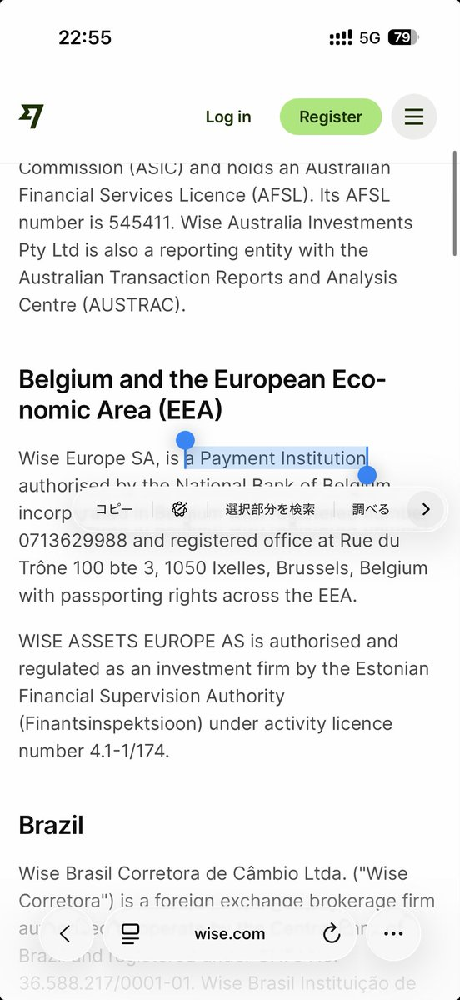

Aoi M
@aoim33
它真的是银行吗？
来睁大眼睛看看这是什么

寂寞火山
@jimohuoshan
关于Wise，不允许还有人不知道：
1、中国大陆护照就可以直接国内线上申请
2、Wise是银行，而不是PayPal这样的纯转账工具
3、Wise进行国际汇款极快，而且比PayPal便宜无数倍
4、Wise就可以收推特创作者收益（绑到支付宝），不需要港卡
5、注册链接：
https://t.co/cBEXr92l40 https://t.co/JMg0wHTihP